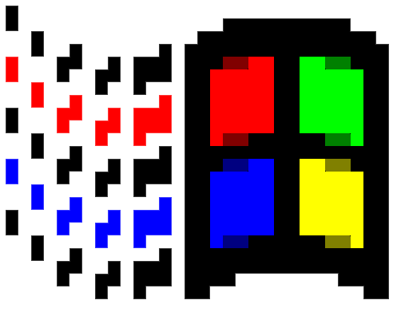

Start
Bio
Zora
Foundation
objkt
Opensea
Github
Substack
Mirror
Portfolio
are you in Miami? wanna hangout? last chance to see Breadbytes!
— Fabiola Larios .˚ * ꒰ঌ👁️໒꒱ * ˚. (@fabiolalariosm) January 30, 2024
come visit us at Bakehouse Art Complex!
open until February 3rd pic.twitter.com/HuapeG6jMq